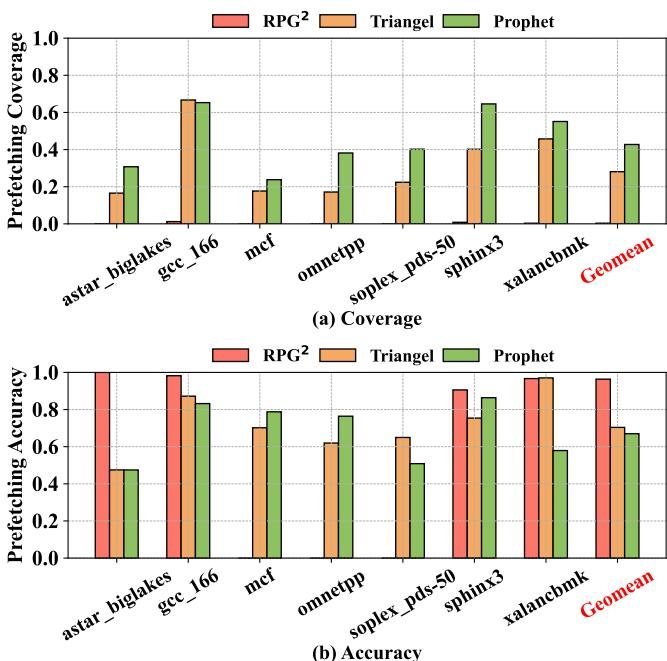
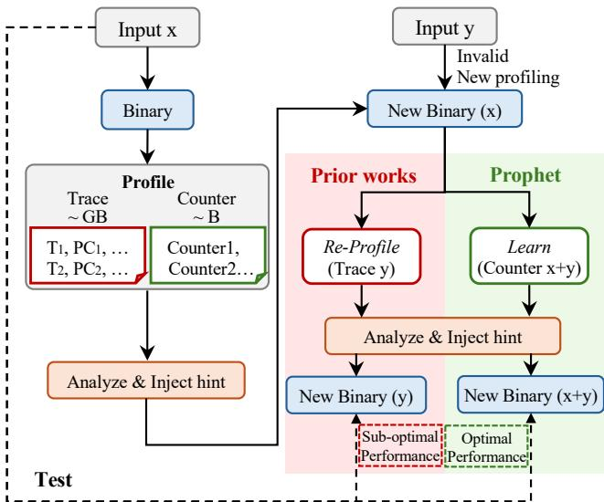
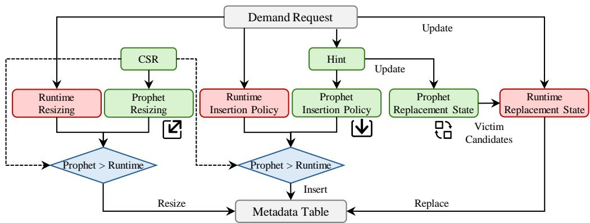
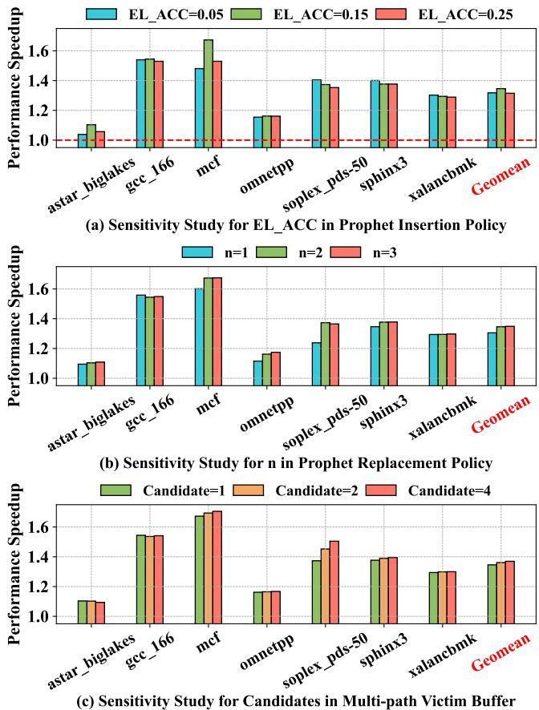

Profile-Guided Temporal Prefetching 论文解析¶
0. 论文基本信息¶
作者 (Authors) - Mengming Li (HKUST) - Qijun Zhang (HKUST) - Yichuan Gao (Intel) - Wenji Fang (HKUST) - Yao Lu (HKUST) - Yongqing Ren (Intel) - Zhiyao Xie (HKUST)
发表期刊/会议 (Journal/Conference) - Proceedings of the 52nd Annual International Symposium on Computer Architecture (ISCA ’25)
发表年份 (Publication Year) - 2025
1. 摘要¶
目的 - 解决现有 Temporal Prefetching（时间局部性预取）方案在管理有限的 on-chip metadata storage（片上元数据存储）时效率低下的问题。 - 现有硬件方案（如 Triangel）因缺乏对程序未来行为的洞察，其 insertion policy（插入策略）和 replacement policy（替换策略）无法有效平衡性能增益与存储开销，常错误地过滤掉有用的元数据或保留无用的元数据。 - 现有的 Profile-Guided（配置文件引导）软件预取方案（如 RPG2）仅对具有规则步长模式的间接访问有效，无法处理指针追逐等复杂的不规则内存访问模式。
方法 - 提出 Prophet，一个 hardware-software co-designed framework（硬件-软件协同设计框架），利用轻量级的 profile-guided 方法来优化硬件时间预取器的元数据表管理。 - 轻量级剖析 (Lightweight Profiling)：使用 PMU counters（性能监控单元计数器）而非完整的执行轨迹进行剖析，开销极低。 - Hint 注入与动态调优 (Hint Injection & Dynamic Tuning)： - 通过离线分析计数器数据，为程序注入 hints（提示），以指导硬件预取器的 insertion policy, replacement policy, 和 resizing（重分配大小）操作。 - 设计了 Learning 机制，能够整合来自不同程序输入的剖析数据，使单个优化后的二进制文件能自适应多种输入。 - 兼容性设计 (Compatibility)：Prophet 与现有的硬件时间预取器（如 Triangel）共存，共享同一个元数据表，仅在频繁执行的工作负载上启用其优化策略。 - 关键技术组件： - Profile-Guided Insertion Policy：基于指令级（PC-level）的预取准确率，过滤掉几乎不产生有用预取的内存指令。 - Profile-Guided Replacement Policy：为元数据条目分配基于预取准确率的优先级，在替换时优先淘汰低优先级条目。 - Multi-path Victim Buffer：为解决单个地址可能有多个 Markov targets（马尔可夫目标）的问题，引入一个辅助缓冲区来存储被驱逐但仍有价值的目标地址。

Figure 8: The percentage of Markov target number (T) in temporal prefetching. Figure 9: The Multi-path Victim Buffer.

结果 - 在 SPEC CPU 等代表性工作负载上，Prophet 相比基线（无时间预取器）实现了 34.58% 的 IPC 加速。 - 性能对比： - 相比最先进的软件间接访问预取方案 RPG2（仅提升 0.1%），Prophet 性能高出 34.48%。 - 相比最先进的硬件时间预取器 Triangel（提升 20.35%），Prophet 性能高出 14.23%。 - 效能分析： - Prophet 的性能增益主要来源于更高效的元数据管理，它同时提升了 prefetching coverage（预取覆盖率）和维持了高 prefetching accuracy（预取准确率）。

Figure 12: Prefetching coverage and accuracy6.
- 自适应能力：通过 Learning 机制，Prophet 能够在一个优化的二进制文件中，为 gcc 等应用的不同输入实现接近最优的性能。

Figure 13: Prophet learns counters from gcc’s inputs.
- 开销：剖析、分析和指令开销均可忽略不计；相比 Triangel，仅引入 1.6% 的额外能耗开销。
| 方案 | 相比基线 IPC 提升 | 相比 RPG2 提升 | 相比 Triangel 提升 |
|---|---|---|---|
| RPG2 | 0.1% | - | -34.48% |
| Triangel | 20.35% | 20.25% | - |
| Prophet | 34.58% | 34.48% | 14.23% |
结论 - Prophet 成功地将 profile-guided optimization 应用于 temporal prefetching 的元数据管理，克服了纯硬件方案因缺乏全局视野而导致的效率低下问题。 - 通过使用 counters 进行轻量级剖析、注入 hints 指导硬件决策以及创新的 Learning 机制，Prophet 实现了 adaptable（自适应）、lightweight（轻量级）和 compatible（兼容性好）的优化。 - Prophet 在处理复杂、不规则的内存访问模式上显著优于现有方案，为解决“内存墙”问题提供了一个高效且实用的新思路。
2. 背景知识与核心贡献¶
研究背景 - Temporal prefetching（时间局部性预取）是处理irregular memory access patterns（不规则内存访问模式）的有效技术，这类模式常见于指针和数据依赖的数据结构中。 - 为了减少访问元数据的内存流量，近期研究将元数据存储从片外DRAM迁移到片上LLC中的metadata table（元数据表）。然而，片上存储资源有限，如何高效管理该表成为关键挑战。 - 现有的硬件方案（如Triangel）在元数据表管理上存在缺陷：其插入策略（如PatternConf）过于保守，会错误地过滤掉能产生有用预取的元数据；而替换策略则未能有效区分元数据的价值。 - 传统的Profile-Guided Optimization (PGO) 方案（如RPG2）主要针对具有规则步长（stride pattern）的间接访问，对于复杂的不规则模式（如pointer-chasing）效果甚微。

Figure 1: The bottom figure shows a metadata access pattern: 1) Blue/Red dots are metadata accesses that result in useful/useless prefetches; 2) Blue/Red stars represent first metadata access with/without temporal patterns. Their corresponding metadata should/should not be inserted in the metadata table. The top figure shows how Triangel [7] applies its PatternConf to the highlighted metadata access pattern.
研究动机 - 纯硬件方案缺乏对程序未来行为的洞察，仅依赖短期历史数据，难以应对元数据访问模式的高度动态性和方差。 - 现有PGO方案无法有效处理复杂的时序模式，且通常对不同的程序输入缺乏适应性，一个输入上生成的优化提示（hints）在另一个输入上可能失效。 - 需要一种既能利用profile-guided方法的全局视野来精确管理元数据，又能保持轻量级、兼容现有硬件且能适应不同输入的解决方案。

Figure 2: Comparison between Prophet and prior profileguided solutions. Prophet is lightweight as it only uses counters for profiling. Prophet can integrate counters from multiple inputs, enabling it to adapt to varying program inputs.
核心贡献 - 提出了 Prophet，一个hardware-software co-designed框架，利用profile-guided方法优化硬件时序预取器的元数据表管理。 - 轻量级Profiling: 使用PMU counters而非完整的执行轨迹（traces）进行分析，显著降低了性能和存储开销。 - 自适应学习机制: 通过迭代地从不同程序输入中采样计数器并合并，使单个优化后的二进制文件能够适应多种输入场景。 - 精细化的元数据管理: - 插入策略: 基于指令级（PC-level）的prefetching accuracy，仅过滤掉几乎无时序模式的指令。 - 替换策略: 在保留的元数据中，根据预取准确率分配优先级，优先替换低价值条目。 - 引入Multi-path Victim Buffer: 解决单个地址对应多个Markov targets的问题，提升了对复杂时序模式的覆盖。 - 卓越的性能表现: 在SPEC CPU等基准测试中，Prophet相比最先进的Triangel实现了14.23%的性能提升，而传统PGO方案（RPG2）仅获得0.1%的增益。
| 对比方案 | 性能提升 (vs. 无预取) | 相比 Triangel 的优势 |
|---|---|---|
| RPG2 | 0.1% | -14.13% |
| Triangel | 20.35% | Baseline |
| Prophet | 34.58% | +14.23% |

Figure 10: IPC speedup compared to RPG2 and Triangel.
3. 核心技术和实现细节¶
0. 技术架构概览¶
整体技术架构
Prophet 是一个 hardware-software co-designed framework，旨在通过 profile-guided methods 优化硬件 temporal prefetcher 的 metadata table management。其核心思想是利用离线分析获得的程序行为洞察，生成轻量级的 hints 注入到程序中，在运行时指导硬件 prefetcher 更高效地管理其有限的片上存储资源。
- Prophet 与现有的硬件 temporal prefetcher（如 Triangel）共存，共享同一个 metadata table，但替换了其原有的、基于短期运行时信息的管理策略。
- 整个框架的流程分为三个阶段：Profiling、Analysis 和 Learning，如

Figure 5: Prophet process overview. Step1: Prophet leverages the PMU to gather counters related to the temporal prefetcher’s performance. Step2: Prophet analyzes the collected counters to generate hints and then injects hints into the original binaries. Step 3: Prophet samples and learns counters across different program inputs.
所示。 - Prophet 的架构主要由三个 profile-guided 组件构成，如

Figure 4: Prophet architecture overview. Prophet coexists with hardware temporal prefetchers by sharing the same metadata table but leveraging more accurate profile-guided methods for metadata table management.
所示： - Profile-Guided Insertion Policy: 决定哪些内存访问指令（PC）产生的请求应该被用来训练 prefetcher 并插入 metadata。 - Profile-Guided Replacement Policy: 为 metadata table 中的条目分配基于 prefetching accuracy 的优先级，以指导替换决策。 - Profile-Guided Resizing: 根据程序对 metadata 存储的峰值需求，预先设定 metadata table 的大小。
Hint 信息注入与传递机制
- Prophet 生成两类 hint 信息：
- PC-level hints: 针对特定内存指令，用于 insertion 和 replacement 策略。
- Application-level hints: 全局性信息（如 metadata table 大小），通过在程序开头插入 CSR manipulation instruction 来设置。
- PC-level hints 通过两种方式注入到程序中：
- Hint Buffer: 使用专用的 hint 指令将 hint 信息和 PC tag 存入一个靠近 prefetcher 的小缓冲区。
- Reserved Bits/Instruction Prefix: 将 hint 直接嵌入到内存访问指令的保留位或 x86 前缀中。
自适应学习能力 (Adaptable Learning)
- Prophet 能够通过 Learning 阶段，持续从不同的程序输入中采样新的性能计数器，并将其与历史数据合并。
- 这种机制使得一个单一的优化二进制文件能够动态调整其 hints，从而在多种不同的输入集上都保持接近最优的性能，解决了传统 PGO 对输入敏感的问题，如

Figure 6: The prefetching accuracy of temporal prefetching across different memory instructions in omnetpp.
和
Figure 13: Prophet learns counters from gcc’s inputs.
所示。
增强的 Metadata 表达能力
- 为了解决单个地址可能对应多个未来访问目标（Markov targets）的问题，Prophet 引入了 Multi-path Victim Buffer。
- 该缓冲区可以存储从主 metadata table 中被替换出去的、但仍有价值的额外 Markov targets，从而提升了对复杂 temporal patterns 的覆盖能力，如
Figure 8: The percentage of Markov target number (T) in temporal prefetching. Figure 9: The Multi-path Victim Buffer.
所示。
1. Profile-Guided Insertion Policy¶
实现原理与核心思想
- Prophet 的 Profile-Guided Insertion Policy 旨在解决现有硬件预取器（如 Triangel）因依赖短时历史数据而导致的插入策略不准确问题。
- 其核心思想是利用离线剖析 (Profiling) 阶段收集的长期、全局的程序执行信息，为每个内存访问指令（PC）计算一个真实的预取准确率 (prefetching accuracy)。
- 基于这个准确率，该策略可以精准地识别并过滤掉那些几乎无法从时间局部性预取中受益的内存指令，从而避免将宝贵的片上元数据表空间浪费在无效条目上。
算法流程与输入输出
- 输入:
- PMU 计数器数据: 在简化版预取器（固定1MB元数据表，预取度为1）下运行程序时，通过 Intel PEBS 收集的两个关键事件计数：
MEM_LOAD_RETIRED.L2_Prefetch_Issue: 由该 PC 发出的 L2 预取请求数量。MEM_LOAD_RETIRED.L2_Prefetch_Useful: 上述预取请求中被后续需求访问命中的数量。
- PMU 计数器数据: 在简化版预取器（固定1MB元数据表，预取度为1）下运行程序时，通过 Intel PEBS 收集的两个关键事件计数：
- 处理:
- 对每个 PC，计算其预取准确率：
Accuracy = L2_Prefetch_Useful / L2_Prefetch_Issue。 - 将计算出的准确率与一个极低的阈值 (extremely low threshold, denoted as
ACC_THRESHOLD) 进行比较。
- 对每个 PC，计算其预取准确率：
- 决策与输出:
- 如果
Accuracy < ACC_THRESHOLD，则判定该 PC 几乎不表现出可被利用的时间局部性模式。 - 生成一个 1-bit hint，指示硬件预取器完全丢弃来自该 PC 的所有需求请求，禁止为其插入任何元数据。
- 这个 1-bit hint 会被注入到原始二进制程序中，通常通过 hint buffer 或 x86 指令前缀的方式携带。
- 如果

参数设置与设计考量
ACC_THRESHOLD的设定:- 该阈值被设计得非常低，目的是采取一种保守的过滤策略。
- 如图16所示，阈值过高会错误地过滤掉有用的元数据，导致性能下降；阈值过低则无法有效节省存储空间。Prophet 选择一个平衡点，确保只过滤掉明确无用的指令。
- 这种保守设计使其与 Triangel 的
PatternConf机制形成鲜明对比，后者因对短期噪声过于敏感而容易错误地拒绝后续有用的访问（如图1所示）。
- Hint 注入方式:
- Hint Buffer: 在程序入口处插入专用 hint 指令，将 PC 和 hint 存入一个小容量（128-entry, ~0.19KB）的缓冲区。此方法兼容所有 ISA。
- Instruction Prefix: 利用 x86 架构的指令前缀来携带 hint。由于仅针对最多128条关键指令，对 I-cache 的影响微乎其微（最大增加6字节）。
在 Prophet 整体框架中的作用
- 提升元数据表利用率: 通过预先过滤掉无效的训练数据源，确保有限的片上存储空间被用于记录真正有价值的地址相关性。
- 奠定精细化管理基础: 作为第一道筛选关卡，Insertion Policy 为后续的 Profile-Guided Replacement Policy 提供了高质量的“候选池”。Replacement Policy 只需在这个已被净化的池子中，根据更细粒度的准确率进行优先级排序。
- 实现软硬协同: 该策略完美体现了 Prophet 的 co-design 思想：复杂的分析和决策在软件层面离线完成，硬件只需执行一个简单的、基于 hint 的开关操作，开销极低。
- 与学习机制结合: 在 Step 3: Learning 阶段，来自不同程序输入的准确率计数会通过特定公式（如 Equation 4）进行合并，使得生成的 hint 能够适应多种输入场景，保证单一优化二进制文件的广泛适用性。
2. Profile-Guided Replacement Policy¶
核心原理与动机
- Prophet 的 Profile-Guided Replacement Policy 旨在解决现有硬件替换策略（如 Hawkeye, SRRIP）的根本缺陷：它们仅基于元数据的重用距离 (reuse distance) 进行决策，而忽略了该元数据是否能产生有用的预取 (useful prefetches)。
- 如图1所示，元数据访问模式高度可变，重用距离方差极大，单纯预测重用距离效率低下。
- Prophet 的核心思想是将预取准确率 (prefetching accuracy) 作为关键指标，为每个内存指令（PC）分配一个细粒度的替换优先级 (replacement priority)。准确率越低的指令所产生的元数据，其优先级越低，在需要替换时会被优先驱逐。
Figure 1: The bottom figure shows a metadata access pattern: 1) Blue/Red dots are metadata accesses that result in useful/useless prefetches; 2) Blue/Red stars represent first metadata access with/without temporal patterns. Their corresponding metadata should/should not be inserted in the metadata table. The top figure shows how Triangel [7] applies its PatternConf to the highlighted metadata access pattern.
算法流程与实现细节
- 输入: 在 Profiling 阶段（Step 1），通过 PMU 的 PEBS 事件收集每个 PC 的两个计数器：
MEM_LOAD_RETIRED.L2_Prefetch_Issue: 发出的预取请求数。MEM_LOAD_RETIRED.L2_Prefetch_Useful: 被需求请求命中的有用预取数。- 计算预取准确率: 对于每个 PC，其预取准确率计算公式为：
- Prefetching Accuracy = L2_Prefetch_Useful / L2_Prefetch_Issue
- 分配优先级: 在 Analysis 阶段（Step 2），使用以下公式将连续的准确率映射为离散的优先级等级：
- Priority Level = floor(Accuracy * n)
- 其中，
n是一个由设计者控制的参数，决定了优先级的粒度。论文评估后选择n=2，即使用 2-bit 来表示 4个 优先级等级，在性能增益和存储开销之间取得平衡。 - 注入与记录: 分配的优先级被编码为 Hint 信息，并通过 Hint Buffer 或 指令前缀 注入到程序二进制文件中。当该 PC 产生的需求请求触发元数据插入时，其对应的 Priority Level 会被记录到 Prophet Replacement State 中，与元数据条目关联。
- 执行替换: 当元数据表满且需要插入新条目时，Prophet 替换策略首先筛选出具有最低优先级等级的所有条目作为候选受害者 (victim candidates)。然后，在这些候选者中应用 LRU (Least Recently Used) 策略来最终确定被替换的条目。

在整体架构中的作用与优势
- 与插入策略协同: 插入策略（Insertion Policy）会过滤掉预取准确率极低（低于阈值
ACC_MIN）的 PC，确保只有“有潜力”的元数据进入表中。替换策略则在此基础上，对已进入表中的元数据进行精细化管理，确保高价值（高准确率）的元数据能被长期保留。 - 提升元数据表利用率: 通过优先驱逐低价值元数据，为高价值元数据腾出空间，显著提高了有限的 on-chip metadata table 的利用效率。
- 直接提升性能: 如图19的特性分解所示，替换策略是 Prophet 性能提升的最大贡献者之一，尤其在 mcf 和 omnetpp 等对缓存污染敏感的工作负载上，分别带来了 14.53% 和 9.89% 的性能增益。

Figure 19: Prophet Features Breakdown.
参数敏感性与存储开销
- 参数
n的影响: - 增加
n可以提供更细粒度的分类，从而可能带来更好的性能。 - 但收益递减，且会线性增加 Prophet Replacement State 的存储开销。
- 存储开销:
- 对于一个 1MB 的元数据表（196,608 个条目），每个条目需要 2-bit 的替换状态。
- 总存储开销为 48 KB。
| 参数 | 默认值 | 作用 | 影响 |
|---|---|---|---|
n |
2 | 控制优先级等级数量 (n+1 levels) |
值越大，优先级越细，性能略好，但存储开销增加 |
| Replacement State | 2-bit per entry | 存储元数据条目的优先级 | 总开销 48 KB for 1MB table |
3. Multi-path Victim Buffer¶
核心动机与问题定义
- 现有的片上时序预取器（如 Triangel）在元数据表中为每个内存地址仅存储单个 Markov 目标，这无法有效处理现实应用中普遍存在的“一对多”访问模式。
- 论文图8（ ）的数据显示，在 SPEC CPU 基准测试中，超过 20% 的内存地址具有 2 个或更多的 Markov 目标。忽略这些额外目标会导致预取不准确和需求缺失（demand misses）。
- 直接在主元数据表中存储多个目标会带来不可接受的存储开销。
）的数据显示，在 SPEC CPU 基准测试中，超过 20% 的内存地址具有 2 个或更多的 Markov 目标。忽略这些额外目标会导致预取不准确和需求缺失（demand misses）。
- 直接在主元数据表中存储多个目标会带来不可接受的存储开销。
Multi-path Victim Buffer 设计原理 - Prophet 引入一个名为 Multi-path Victim Buffer 的专用缓冲区，其核心思想是：当元数据表因容量限制需要替换条目时，并非直接丢弃被替换条目中的 Markov 目标，而是根据其优先级决定是否将其存入此缓冲区。 - 该缓冲区作为主元数据表的补充，专门用于保存那些有价值但暂时无法驻留主表的“第二选择”或“第三选择”目标地址。
算法流程与管理策略 - 插入 (Insertion): - 当一个 Markov 目标因主元数据表替换而被驱逐时，系统会检查其优先级级别（由公式2
计算得出）。
- 仅当该优先级级别 大于 预设的极低阈值 ACC_MIN 时，该目标才会被存入 Multi-path Victim Buffer。这确保了缓冲区空间被高效利用，只保留高价值的目标。
- 替换 (Replacement):
- Multi-path Victim Buffer 拥有自己独立的替换策略，复用 Prophet 的替换思想但针对其自身特点进行了调整。
- 如图9（

Figure 7: Challenges of traditional profile-guided optimizations across different program inputs.
）所示，缓冲区为每个 Markov 目标维护一个计数器。 - 每当该目标被访问（即被用于预取），其计数器值就递增。 - 在需要替换缓冲区条目时，其优先级级别被设定为该计数器的最大值，从而优先保留被频繁使用的多路径目标。 - 预取 (Prefetch): - 在正常的预取请求生成过程中（无论是来自主元数据表还是 Reuse Buffer），系统会同时触发对 Multi-path Victim Buffer 的查找。 - 使用相同的查找地址在 Multi-path Victim Buffer 中搜索。 - 如果发现匹配项，Prophet 会将这些额外的 Markov 目标也作为预取候选发出请求，从而覆盖更复杂的访问模式。
参数设置与权衡 - 论文图16（

Figure 16: Sensitivity study.
）的敏感性分析表明，为每个元数据条目在缓冲区中保留 1 个额外的 Markov 候选者是最佳选择。 - 保留更多候选者虽然能略微提升预取覆盖率，但会带来负面效应： - 对于 astar 这类对缓存污染和内存带宽浪费敏感的工作负载，过多的预取反而会降低性能。 - 考虑到图8显示大部分地址的 Markov 目标少于2个，保留过多候选者会造成不必要的存储开销。
输入输出关系及整体作用 - 输入: 来自主元数据表替换操作的、被驱逐的高优先级 Markov 目标；以及来自处理器核心的常规内存访问流（用于触发缓冲区查找）。 - 输出: 额外的、针对复杂“一对多”模式的预取请求。 - 在 Prophet 整体框架中的作用: - 它是 Prophet 高效元数据管理的关键一环，解决了传统设计无法处理多路径时序模式的根本缺陷。 - 通过精细管理（基于优先级的插入和基于使用频率的替换），它以可控的存储和带宽开销（论文指出仅增加 1.95% 内存带宽）显著提升了预取覆盖率。 - 其效果在特定工作负载上尤为突出，例如在 soplex 上贡献了 13.46% 的性能提升，并且甚至能改善对带宽敏感的 astar 的性能。
4. Adaptive Learning across Inputs¶
Adaptive Learning across Inputs 的实现原理
Prophet 的自适应学习机制旨在解决传统 Profile-Guided Optimization (PGO) 对不同程序输入敏感的核心痛点。其核心思想是通过一个持续的、增量的学习循环，将从新输入中采样的运行时计数器与历史数据合并，从而动态更新用于指导硬件预取器的 hints，最终使单一优化后的二进制文件能高效应对多样化的输入。
- 问题根源: 传统 PGO 为特定输入生成 hints，当程序执行路径因输入改变而变化时（如图7所示），原有 hints 可能失效。
- 对于在所有输入下都执行的指令（如 Load A），hints 具有通用性。
- 对于仅在特定输入下执行的指令（如 Load B/C），需要为新指令生成新 hints。
- 对于在不同输入下行为不同的指令（如 Load E），需要动态调整其 hints。
- 解决方案: Prophet 引入了一个三步闭环流程：Profiling -> Analysis -> Learning。
- Profiling 阶段使用简化的预取器和 PMU 计数器收集原始性能数据。
- Analysis 阶段离线处理计数器，生成 PC-level 和 application-level 的 hints 并注入二进制文件。
- Learning 阶段是自适应的关键，它周期性地触发新的 Profiling，并将新数据与历史数据合并，驱动下一轮 Analysis。

算法流程与数据合并策略
自适应学习的具体算法体现在对两类关键计数器的合并上：PC-level 的预取准确率和 application-level 的元数据表分配条目数。
- PC-level 预取准确率合并:
- 系统维护一个历史准确率值
A_old。 - 当遇到新输入时，采样得到新的准确率
A_new。 - 使用指数移动平均（Exponential Moving Average）进行合并，公式如下：
其中
N是一个由设计者预定义的参数，控制新数据的影响权重。 - 作用:
- 对于行为一致的指令（Load A），
A_new ≈ A_old，合并后A_merged变化微小，hints 保持稳定。 - 对于新出现的指令（Load C），
A_old不存在或为默认值，A_merged主要由A_new决定，从而生成新 hints。 - 对于行为变化的指令（Load E），
A_merged会向A_new偏移，实现 hints 的动态调整。
- 对于行为一致的指令（Load A），

- Application-level 元数据表大小合并:
- 系统维护历史峰值分配条目数
E_old。 - 采样新输入得到
E_new。 - 采用保守策略进行合并：
E_merged = max(E_old, E_new)。 - 作用: 确保元数据表的大小足以容纳所有已观测输入场景下的峰值需求，避免因空间不足而损害性能。

参数设置与输入输出关系
- 关键参数:
N(学习率参数): 控制新输入数据对合并结果的影响速度。N越大，系统越“健忘”，对新输入的响应越慢，但稳定性越高；N越小，系统越“敏感”，能快速适应新输入，但可能因噪声数据而波动。-
Profiling 间隔: 并非每次程序执行都进行 Profiling。根据经验，每 10-100 次执行采样一次即可，这极大地降低了运行时开销。
-
输入与输出:
- 输入: 多样化的程序输入（Program Inputs）。
- 内部状态: 历史计数器（
A_old,E_old）。 - 处理: 在 Learning 阶段，新输入触发 Profiling，产生新计数器（
A_new,E_new），并通过上述合并算法更新内部状态。 - 输出: 更新后的 hints，这些 hints 被用于下一轮的 Analysis 和二进制优化，最终影响硬件预取器的 Insertion Policy, Replacement Policy, and Resizing 行为。
在整体框架中的作用与效果
该自适应学习机制是 Prophet “Adaptable” 特性的基石，使其在实际部署中更具实用价值。
- 效果验证: 如图13所示，在
gcc应用上，Prophet 从第一个输入gcc_166开始学习。随着逐步引入gcc_expr,gcc_typeck等新输入，其性能逐渐提升并最终接近为每个输入单独优化的“理想”性能（Direct）。 - 泛化能力: 如图14所示，该学习机制不仅适用于
gcc，还能有效泛化到astar和soplex等其他工作负载。 - 对比优势: 与 RPG2 等传统方案相比，Prophet 无需为每个新输入重新进行完整的 PGO 流程，而是能够增量式地利用历史知识，实现“一次优化，多输入受益”。
Figure 13: Prophet learns counters from gcc’s inputs.

Figure 14: Prophet’s learning feature can be generalized to other workloads, such as astar and soplex.
5. Lightweight Counter-Based Profiling¶
实现原理与核心思想
Prophet 的轻量级剖析（Lightweight Profiling）机制摒弃了传统方案中开销巨大的完整内存访问 trace，转而利用现代处理器内置的 Performance Monitoring Unit (PMU) 和 Processor Event-Based Sampling (PEBS) 功能，仅收集高度聚合的 计数器（counters）。这一设计的核心在于，通过少量、精准的硬件事件计数，即可推导出指导元数据表管理所需的全部关键指标。
- 关键洞察：论文指出，尽管单个元数据访问模式（如 Figure 1 所示）具有高度动态性和方差，但针对每个 Program Counter (PC) 的整体 prefetching accuracy 却呈现出稳定的、可分类的特性（如 Figure 6 所示）。这使得基于 PC 级别的计数器统计成为可能且有效。
- 目标指标：该机制旨在高效获取两大类信息：
- PC-level 指标：每个内存访问指令（由其 PC 标识）的 prefetching accuracy，用于指导 插入策略（Insertion Policy） 和 替换策略（Replacement Policy）。
- Application-level 指标：程序执行结束时 metadata table 的 allocated entries 数量，用于指导 resizing 操作。
算法流程与数据收集
剖析流程分为两个明确的数据收集阶段，均在 Step 1: Profiling 中完成，并依赖于一个简化的临时预取器配置。
- 简化预取器配置：
- 插入策略被禁用。
- 元数据表大小固定为 1 MB。
- 预取度（prefetching degree）设为 1。
-
此配置确保了对所有内存指令的无偏评估，避免了现有优化策略对剖析结果的干扰。
-
PC-level Prefetching Accuracy 收集：
- 利用 Intel PEBS 功能，在特定硬件事件发生时记录上下文（主要是 PC）。
- 启用并采样以下两个自定义事件（基于
MEM_LOAD_RETIRED.L2_MISS事件修改而来）：MEM_LOAD_RETIRED.L2_Prefetch_Issue：记录发出的预取请求数量。MEM_LOAD_RETIRED.L2_Prefetch_Useful：记录被后续需求请求命中的有用预取数量。
- 对于每个 PC，其 prefetching accuracy 通过以下公式计算： prefetching_accuracy = L2_Prefetch_Useful / L2_Prefetch_Issue
- Application-level Allocated Entries 收集：
- 使用标准 PMU counters（非 PEBS）来追踪全局事件。
- 定义两个计数器：
N_insertions：元数据表的总插入次数。N_replacements：元数据表的总替换（驱逐）次数。
- 程序结束时，allocated entries 的数量通过以下公式估算： N_allocated = N_insertions - N_replacements
输入输出关系及在 Prophet 整体框架中的作用
该剖析机制是 Prophet 硬件-软件协同设计的起点，其输入和输出紧密衔接了离线分析与在线执行。
- 输入：
- 目标应用程序的原始二进制文件。
-
一组或多组具有代表性的 program inputs。
-
输出：
- 一组结构化的 counter data，包含每个相关 PC 的
(L2_Prefetch_Issue, L2_Prefetch_Useful)对，以及全局的(N_insertions, N_replacements)对。 -
这些数据是 Step 2: Analysis 的唯一输入，用于生成 hints。
-
在整体框架中的作用：
- 奠基作用：为后续所有 profile-guided 优化（插入、替换、重设大小）提供真实、低开销的决策依据。相比硬件仅能依赖短时历史，这些计数器反映了程序在整个剖析运行周期内的长期行为。
- 实现“Adaptable”特性：在 Step 3: Learning 中，新输入产生的计数器会与历史计数器按特定公式（如 Equation 4 和 Equation 5）进行合并，使 hints 能够动态适应不同的程序输入。
-
- 保证“Lightweight”特性：整个剖析过程开销极低。根据论文引用 [15]，采样少量 PEBS 事件引入的性能开销 小于 2%，且并非每次程序执行都需要剖析，通常每 10-100 次执行一次即可。
开销与可行性分析
| 开销类型 | 具体描述 | 量化结果 |
|---|---|---|
| Profiling Overhead | 运行时收集计数器的性能损失 | < 2% (因仅采样2-3个PEBS事件和1个PMU事件) |
| Analysis Overhead | 离线脚本处理计数器生成hints的时间 | < 1秒 (对所有评测workload) |
| Instruction Overhead | 注入hints到二进制文件带来的额外指令 | 可忽略 (最多128条hint指令，对比数十亿条主程序指令) |
该设计充分利用了现有处理器架构（如 Intel Xeon）已支持的 PMU/PEBS 功能，无需任何额外的硬件追踪单元，因此具有极强的 现实可行性 和 部署便利性。
4. 实验方法与实验结果¶
实验设置
- 模拟平台: 采用 gem5 的全系统 (FS) 模式进行评估。
- 系统配置: 主要参数与 Triangel 论文保持一致，具体细节见下表。
| 组件 | 配置 |
|---|---|
| CPU | 4 核 OoO CPU, 3.2GHz, 8-wide issue |
| L1 Cache | 64KB I/D, 4-way, 64B block, 4-cycle hit |
| L2 Cache | 1MB, 8-way, 64B block, 12-cycle hit |
| LLC | 8MB, 16-way, 64B block, shared with Markov table |
| DRAM | 4-channel DDR4-2400, 12.8GB/s per channel |
| Prefetchers | L1: Stride; L2: Prophet/Triangel/RPG2 |
- 工作负载:
- 使用 SPEC CPU 中具有不规则内存访问模式的 benchmark（如
mcf,omnetpp,gcc等）。 - 同时包含 CRONO 图计算 benchmark 套件。
- 采用 SimPoint 技术生成代表性检查点，并对结果进行加权平均。
- 基线对比:
- 硬件基线: Triangel，使用其开源实现。
- 软件基线: RPG2，通过 hint buffer 机制模拟其软件预取指令插入。

核心结果数据
- 整体性能: 相比无时间预取器的基线，Prophet 平均 IPC 提升 34.58%，显著优于 Triangel (20.35%) 和 RPG2 (0.1%)。
- Prophet 相对于 Triangel 的性能增益为 14.23%。
- Prophet 相对于 RPG2 的性能增益高达 34.48%。
Figure 10: IPC speedup compared to RPG2 and Triangel.
- 内存流量: Prophet 引入的 DRAM 流量开销为 18.67%，仅比 Triangel (10.33%) 多出 5.35% 的额外开销，证明其高效性。

Figure 11: DRAM traffic compared to RPG2 and Triangel.
- 预取效果分析:
- Prophet 将 demand misses 减少了 42.75%，而 Triangel 仅为 28.08%。
- 两者的 prefetching accuracy 相当，表明 Prophet 的优势源于更高的 prefetching coverage，而非激进的、低精度的预取。
Figure 12: Prefetching coverage and accuracy6.
- 图计算工作负载: 在 CRONO 上，Prophet (14.85%) 同样优于 RPG2 (9.11%) 和 Triangel (8.41%)，证明其通用性。

Figure 15: IPC speedup on graph workloads.
消融实验 (Ablation Study)
消融实验以 Triage4 + Triangel metadata format 为基础，逐项添加 Prophet 的特性，以量化各组件的贡献。
Figure 19: Prophet Features Breakdown.
- Profile-Guided Replacement Policy:
- 贡献最大，尤其在
mcf(+14.53%) 和omnetpp(+9.89%) 等对缓存污染敏感的工作负载上效果显著。 -
通过保留高 prefetching accuracy 的元数据，有效提升了元数据表的利用率。
-
Profile-Guided Insertion Policy:
- 设计保守，避免了像 Triangel 的 PatternConf 那样错误过滤有用元数据的问题。
-
在
mcf上带来 16.72% 的显著提升，并有效降低了内存流量。 -
Multi-path Victim Buffer:
- 用于处理单个地址对应多个 Markov targets 的复杂场景（如
soplex，+13.46%）。 -
仅引入 1.95% 的额外内存带宽开销，对
astar等带宽敏感型应用影响甚微。 -
Profile-Guided Resizing:
- 对元数据需求较小的应用（如
sphinx3）最有效，可释放更多 LLC 空间，带来 1.5% 的性能增益。 - 实验表明，动态调整元数据表大小带来的收益有限，因此采用基于峰值需求的静态分配是高效且实用的策略。